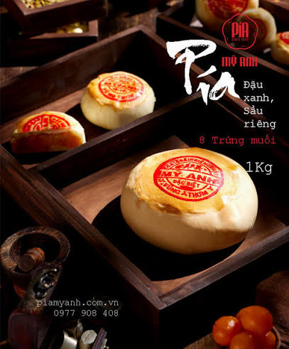

Bánh Pía là đặc sản nổi tiếng nhất của Sóc Trăng, có nguồn gốc từ cộng đồng người Hoa Triều Châu di cư đến vùng đất này vào cuối thế kỷ XIX. Ban đầu, bánh chỉ có nhân đậu xanh và mỡ heo theo công thức truyền thống. Qua nhiều thế hệ, người dân Sóc Trăng đã cải tiến bằng cách kết hợp thêm sầu riêng, trứng muối và nhiều loại nhân khác để tạo nên hương vị thơm ngon đặc trưng. Đến nay, bánh Pía đã trở thành biểu tượng ẩm thực của Sóc Trăng và là món quà được nhiều du khách lựa chọn khi đến tham quan nơi đây.

Lạp xưởng Sóc Trăng được hình thành từ nghề chế biến thực phẩm của người Hoa sinh sống tại địa phương hơn một thế kỷ trước. Nhờ bí quyết tẩm ướp gia truyền cùng phương pháp phơi nắng tự nhiên, lạp xưởng có vị ngọt nhẹ, thơm và màu đỏ đẹp mắt. Theo thời gian, món ăn này trở thành một trong những đặc sản nổi tiếng của Sóc Trăng, thường xuất hiện trong các dịp lễ, Tết và được nhiều gia đình lựa chọn làm quà biếu.

Bánh Cống là món ăn truyền thống của đồng bào Khmer Nam Bộ, gắn liền với đời sống sinh hoạt và các lễ hội văn hóa từ nhiều đời nay. Bánh được làm từ bột gạo, đậu xanh, thịt heo và tôm tươi rồi chiên trong khuôn hình trụ gọi là "cống", từ đó hình thành tên gọi độc đáo. Ngày nay, bánh Cống không chỉ là món ăn quen thuộc của người dân địa phương mà còn là món ăn hấp dẫn đối với khách du lịch.

Khô Trâu được chế biến từ thịt trâu tươi tuyển chọn, kết hợp cùng các loại gia vị như sả, tỏi, ớt, tiêu và nước mắm theo công thức truyền thống. Sau khi tẩm ướp, thịt được phơi dưới nắng tự nhiên hoặc sấy khô để giữ được hương vị đậm đà và bảo quản lâu hơn. Đây là món đặc sản được người dân miền Tây yêu thích trong các dịp lễ, Tết và các buổi họp mặt gia đình.

Mắm Bò Hóc là loại mắm truyền thống của đồng bào Khmer, được chế biến từ các loại cá nước ngọt và ủ lên men trong thời gian dài. Với hương vị đặc trưng, mắm Bò Hóc là nguyên liệu quan trọng tạo nên món Bún Nước Lèo Sóc Trăng nổi tiếng. Đây là món ăn mang đậm bản sắc văn hóa Khmer và được lưu truyền qua nhiều thế hệ.

Tôm Khô Sóc Trăng được làm từ tôm đất tự nhiên đánh bắt tại vùng cửa biển Trần Đề. Sau khi sơ chế và luộc chín, tôm được phơi nắng nhiều lần để giữ nguyên vị ngọt tự nhiên, màu đỏ đẹp mắt và hương thơm đặc trưng. Đây là đặc sản nổi tiếng được nhiều du khách mua về làm quà sau mỗi chuyến tham quan Sóc Trăng.

Chả Lụa là món ăn truyền thống quen thuộc của người Việt, được người dân Sóc Trăng gìn giữ và phát triển theo phương pháp chế biến thủ công. Chả được làm từ thịt heo tươi nguyên chất, gói bằng lá chuối và hấp chín, tạo nên hương thơm tự nhiên cùng vị dai giòn hấp dẫn. Món ăn thường xuất hiện trong các dịp lễ, Tết và bữa cơm gia đình.

Bánh Ống là món bánh dân gian của đồng bào Khmer, có lịch sử lâu đời tại Sóc Trăng. Bánh được làm từ bột gạo, nước cốt dừa, đường và lá dứa, sau đó hấp trong khuôn hình ống nên có tên gọi là Bánh Ống. Đây là món ăn gắn liền với các phiên chợ quê, lễ hội văn hóa Khmer và là nét đẹp trong đời sống ẩm thực của người dân Nam Bộ.

Gạo ST25 là giống lúa chất lượng cao được kỹ sư Hồ Quang Cua cùng các cộng sự nghiên cứu và lai tạo trong nhiều năm tại Sóc Trăng. Năm 2019, ST25 đạt danh hiệu "Gạo ngon nhất thế giới", góp phần đưa thương hiệu gạo Việt Nam vươn xa trên thị trường quốc tế. Đây là niềm tự hào không chỉ của Sóc Trăng mà còn của ngành nông nghiệp Việt Nam.

Khô Cá Sặc được làm từ cá sặc bổi – loài cá đặc trưng của vùng Đồng bằng sông Cửu Long. Sau khi sơ chế sạch, cá được ướp muối theo tỷ lệ phù hợp rồi đem phơi nắng tự nhiên để giữ được vị thơm ngon và độ dai đặc trưng. Món ăn này đã trở thành đặc sản quen thuộc trong bữa cơm của nhiều gia đình miền Tây.

Bánh In là loại bánh truyền thống xuất hiện từ lâu đời trong văn hóa của người Khmer và người Hoa tại Sóc Trăng. Bánh được làm từ bột nếp rang, đường và đậu xanh, sau đó ép vào khuôn gỗ tạo nên nhiều hoa văn đẹp mắt. Đây là món bánh thường được dùng trong các dịp lễ hội, Tết cổ truyền và cúng tổ tiên.

Hành tím Vĩnh Châu là nông sản nổi tiếng của thị xã Vĩnh Châu, tỉnh Sóc Trăng. Nghề trồng hành đã được người dân địa phương duy trì qua nhiều thế hệ nhờ điều kiện đất đai và khí hậu thuận lợi. Hành có củ chắc, màu tím đẹp, vị cay nhẹ và hương thơm đặc trưng, được tiêu thụ rộng rãi trong nước và xuất khẩu sang nhiều thị trường quốc tế.